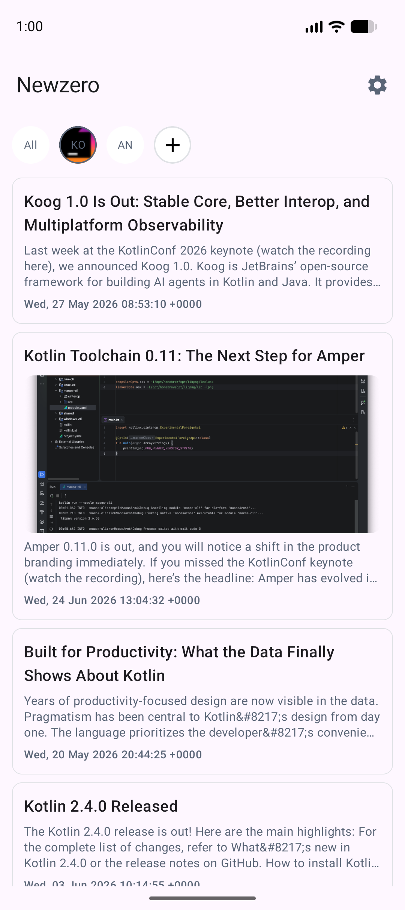
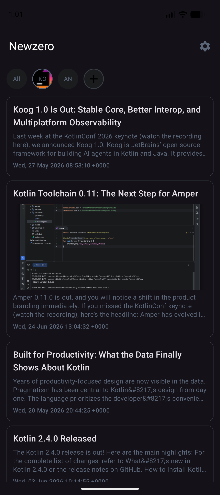

Cross-platform RSS/Atom feed reader built with Kotlin Multiplatform & Compose Multiplatform. One shared codebase, three platforms.
Parses both feed formats using Ktor XML content negotiation with kotlinx.serialization. Automatic format detection.
Two-tier cache (in-memory + disk) keeps articles available offline. JSON-persisted via multiplatform-settings.
Custom Slate color palette with automatic light/dark mode. System-following, manual-light, and manual-dark modes.
Material Design 3 styled pull-to-refresh with forced re-fetch. Background sync on Android via WorkManager.
Article thumbnails and feed favicons rendered with Coil 3 (Kotlin Multiplatform image loading library).
Custom Redux-like NanoStore pattern with unidirectional data flow. Sealed Action/Effect classes.
Network and parse errors shown in a clean dialog with one-tap clipboard copy for debugging.
Lightweight dependency injection. Platform-specific modules for Android, iOS, and Desktop with shared common layer.
MIT licensed. No subscriptions, no ads, no tracking. Free forever.
┌─────────────────────────────────────────────────────────────┐
│ Compose Multiplatform UI │
│ ┌──────────┐ ┌────────────┐ ┌─────────┐ ┌───────────┐ │
│ │ PostList │ │ FeedList │ │Settings │ │ Error │ │
│ │(Articles)│ │(Manage │ │(Theme │ │ Dialog │ │
│ │ │ │ Feeds) │ │ Toggle) │ │ │ │
│ └────┬─────┘ └────┬───────┘ └────┬────┘ └─────┬─────┘ │
│ └─────────────┴───────────────┴──────────────┘ │
│ │ │
│ ┌──────────▼───────────┐ │
│ │ ArticleStore │ State / Action / │
│ │ (NanoStore impl) │ Effect pattern │
│ └──────────┬───────────┘ │
└─────────────────────────┼───────────────────────────────────┘
│
┌─────────────┼──────────────┐
▼ ▼ ▼
┌────────────┐ ┌───────────┐ ┌──────────────┐
│ FeedManager│ │ FeedCache │ │ RssService │
│ Business │ │ Persist │ │ Ktor HTTP │
│ Logic │ │ │ │ + XML Parse │
└──────┬─────┘ └───────────┘ └──────┬───────┘
│ │
▼ ▼
┌───────────┐ ┌────────────────┐
│multiplatf │ │ RSS / Atom │
│orm-settngs│ │ XML Endpoint │
│(Key-Value)│ │ │
└───────────┘ └────────────────┘
Data flow is unidirectional:
User Input → dispatch(Action) → Store.process() → async side-effect → new State → UI recompose
Newzero/ ├── shared/ # KMP shared module │ └── src/commonMain/kotlin/ │ └── com/rajumark/newzero/ │ ├── app/ # Redux state management │ │ ├── ArticleStore.kt # Action dispatch + async ops │ │ └── ReduxCore.kt # NanoStore interface │ ├── core/ # Business logic │ │ ├── FeedManager.kt # Add/Remove/Load feeds │ │ └── NetworkClient.kt # Ktor config + XML plugins │ ├── datasource/ # Data layer │ │ ├── network/ # RssService (HTTP + parse) │ │ └── storage/ # FeedCache (mem + disk) │ ├── domain/ # ArticleFeed, AtomFeed models │ └── ui/ # Compose shared UI ├── androidApp/ # Android (App + WorkManager) ├── desktopApp/ # Desktop JVM (macOS/Win/Linux) └── iosApp/ # iOS Xcode wrapper
| Layer | Technology |
|---|---|
| Language | Kotlin 2.3.21 |
| UI Framework | Compose Multiplatform 1.11.0 + Material 3 |
| Navigation | Jetpack Navigation Compose (Multiplatform) |
| Networking | Ktor 3.4.3 (OkHttp / Darwin engines) |
| XML Parsing | xmlutil 0.91.3 + ktor-serialization-kotlinx-xml |
| Image Loading | Coil 3.4.0 |
| Dependency Injection | Koin 4.2.1 |
| Persistence | multiplatform-settings 1.3.0 |
| Serialization | kotlinx.serialization 1.11.0 |
| Coroutines | kotlinx.coroutines 1.11.0 |
| Logging | Napier 2.7.1 |
| Background Sync | Android WorkManager 2.11.2 |
| Build System | Gradle + AGP 9.0.1 |
User types URL → taps "Add"
│
▼
dispatch(ArticleAction.Add(url))
│
▼
ArticleStore.addSource(url)
│
├─ FeedManager.addSource(url)
│ ├─ RssService.fetchByUrl(url)
│ │ └─ Ktor HTTP GET
│ │ │
│ │ ├─ Content-Type: application/rss+xml
│ │ │ └─ Deserialize as ArticleFeed (RSS 2.0)
│ │ │
│ │ ├─ Content-Type: application/atom+xml
│ │ │ └─ Deserialize as AtomFeed → convert to ArticleFeed
│ │ │
│ │ └─ Content-Type: application/xml
│ │ └─ Try RSS parser
│ │
│ └─ FeedCache.save(feed)
│ ├─ memCache[url] = feed (instant)
│ └─ diskCache = memCache (JSON → Settings)
│
├─ dispatch(ArticleAction.Data(sources))
│
▼
UI recomposes with new feed


# Build shared module (JVM) ./gradlew :shared:compileKotlinJvm # Install on Android emulator/device ./gradlew :androidApp:installDebug # Run Desktop app ./gradlew :desktopApp:run # Build iOS framework (macOS only) ./gradlew :shared:linkDebugFrameworkIosSimulatorArm64 # Open iosApp/iosApp.xcodeproj in Xcode → run